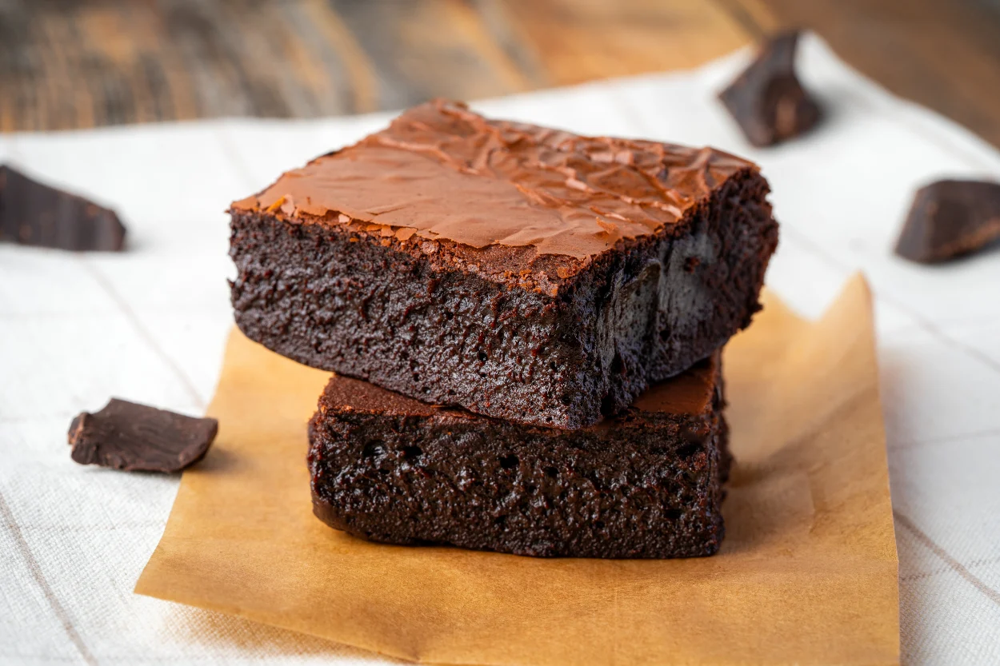

Dışının kıtır, içinin o yumuşak dokusu ve içerdiği beyaz çikolata parçalarıyla.. Yanında bir fincan kahve ile tam bir mutluluk tablosu.

Brownie Tarifi için Malzemeler
300 gram bitter çikolata
3 adet yumurta
150 gram tereyağı
1 su bardağı şeker
1 su bardağı un
1 paket vanilya
Yapılışı
Tereyağını minik bir sos tenceresinin içerisinde eritin.
Eridiği gibi ocaktan alın ve tereyağınız henüz sıcakken parça parça böldüğünüz çikolataları içerisine aktarın.
Ardından tereyağlı çikolata karışımını oda sıcaklığında soğuması için bir kenara alın.
Bir kabın içerisine yumurtaları alın, şekeri de ilave ederek güzelce çırpın.
Çırpılan şekerle yumurtaların üzerine azar azar tereyağlı çikolatalı karışımı aktarın ve karıştırmaya devam edin.
Tüm karışımı ekleyip karıştırdıktan sonra un ve vanilyayı eleyerek üzerine ilave edin.
Spatula yardımıyla brownie harcını tüm malzemeler birleşinceye dek katlayarak karıştırın.
Ardından yağlanmış ya da pişirme kağıdı serilmiş 20 cm'lik kare kek kalıbına hazırladığınız karışımı aktarın.
160 derecede önceden ısıtılmış fansız fırında 30-35 dakika kadar pişirin. Üzeri hafif çatlak bir görünüm alınca fırından çıkarın ve oda sıcaklığında en az 1 saat kadar dinlendirin.